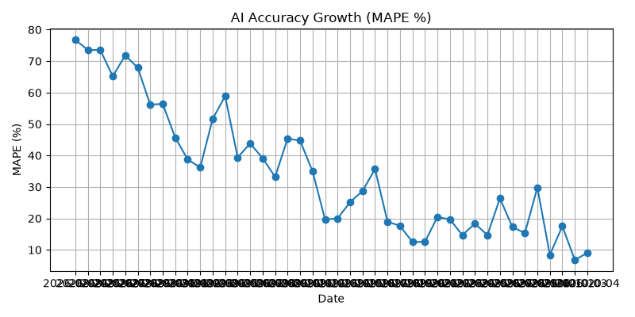

Self-Learning Osaka Weather AI
今日の 24時間 予報
大阪 天気予報
| Time | Temperature | Precipitation Probability | Weather |
|---|
| 2026-09-30T11:00 | 27.8°C | 0% | Partly cloudy |
| 2026-09-30T12:00 | 28.8°C | 0% | Overcast |
| 2026-09-30T13:00 | 28.0°C | 0% | Overcast |
| 2026-09-30T14:00 | 29.1°C | 0% | Partly cloudy |
| 2026-09-30T15:00 | 28.8°C | 0% | Overcast |
| 2026-09-30T16:00 | 28.4°C | 0% | Partly cloudy |
| 2026-09-30T17:00 | 27.4°C | 0% | Partly cloudy |
| 2026-09-30T18:00 | 25.7°C | 0% | Partly cloudy |
| 2026-09-30T19:00 | 24.6°C | 0% | Partly cloudy |
| 2026-09-30T20:00 | 24.6°C | 0% | Partly cloudy |
| 2026-09-30T21:00 | 23.8°C | 0% | Partly cloudy |
| 2026-09-30T22:00 | 23.7°C | 0% | Partly cloudy |
| 2026-09-30T23:00 | 22.7°C | 0% | Overcast |
| 2026-10-01T00:00 | 17.3°C | 0% | Mainly clear |
| 2026-10-01T01:00 | 17.0°C | 0% | Overcast |
| 2026-10-01T02:00 | 17.2°C | 0% | Partly cloudy |
| 2026-10-01T03:00 | 16.4°C | 0% | Overcast |
| 2026-10-01T04:00 | 17.3°C | 0% | Partly cloudy |
| 2026-10-01T05:00 | 18.3°C | 0% | Overcast |
| 2026-10-01T06:00 | 17.5°C | 0% | Mainly clear |
| 2026-10-01T07:00 | 18.2°C | 0% | Partly cloudy |
| 2026-10-01T08:00 | 20.5°C | 0% | Overcast |
| 2026-10-01T09:00 | 20.3°C | 0% | Overcast |
| 2026-10-01T10:00 | 21.1°C | 0% | Overcast |
直近の完了済み気象データ
| 時間 | 気温 | 降水 |
|---|
| 00:00 | 21.8 | 100% |
| 01:00 | 21.8 | 99% |
| 02:00 | 21.7 | 99% |
| 03:00 | 21.7 | 98% |
| 04:00 | 21.2 | 98% |
| 05:00 | 20.9 | 99% |
| 06:00 | 20.8 | 100% |
| 07:00 | 20.7 | 100% |
| 08:00 | 20.6 | 100% |
| 09:00 | 21.0 | 100% |
| 10:00 | 20.6 | 100% |
| 11:00 | 20.5 | 100% |
| 12:00 | 20.4 | 100% |
| 13:00 | 20.2 | 100% |
| 14:00 | 20.0 | 100% |
| 15:00 | 20.3 | 100% |
| 16:00 | 20.3 | 99% |
| 17:00 | 19.9 | 99% |
| 18:00 | 19.7 | 96% |
| 19:00 | 19.5 | 91% |
| 20:00 | 19.4 | 85% |
| 21:00 | 19.2 | 78% |
| 22:00 | 19.0 | 73% |
| 23:00 | 18.9 | 67% |
| 00:00 | 18.7 | 57% |
| 01:00 | 18.8 | 39% |
| 02:00 | 18.8 | 16% |
| 03:00 | 18.8 | 0% |
| 04:00 | 18.7 | 0% |
| 05:00 | 18.7 | 0% |
| 06:00 | 18.7 | 0% |
| 07:00 | 19.0 | 0% |
| 08:00 | 20.0 | 0% |
| 09:00 | 21.0 | 0% |
| 10:00 | 21.9 | 0% |
誤差（完了観測 vs 事前予測）
MAE: 5.852 / MAPE: 29.80%
| 温度誤差 (°C) |
|---|
| 8.20 |
| 9.40 |
| 9.30 |
| 9.00 |
| 7.80 |
| 8.10 |
| 6.80 |
| 5.10 |
| 5.30 |
| 5.70 |
| 3.70 |
| 3.90 |
| 4.90 |
| 5.10 |
| 4.80 |
| 4.80 |
| 5.50 |
| 4.40 |
| 3.80 |
| 4.70 |
| 5.30 |
| 4.50 |
| 4.50 |
AI 成長グラフ（MAPE履歴）
